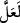
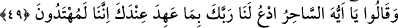

Açıkça anlaşılması gereken şudur ki bu ifâde, terakkî yani sözü peyderpey yükseltme
babındandır. Bir milletin kökünün kesileceği safhalarda âyetullah ve sünnetullah böyle
cârî olmuştur.
Bazıları şöyle demişlerdir: Özellikle her gelen âyet bir çeşit i’cazla diğerinden daha
özel, bu itibarla da daha üstündür.
Fakir (Bursevî) der ki: Âyet ve mu’cizeler âyet olmaları bakımından hadd-i zâtında
eşit olup itibârî farklılıklar arz etmektedir. Kur’an âyetleri de böyledir. Bunların her
biri Allah kelâmı olmaları bakımından eşittirler. Mânâlarındaki katman ve derinlikler
bakımından farklılık arz etmektedirler. Buna göre bir âyetin diğerinden daha büyük
olduğu ifâdesinden murad, o âyetin bir yönden diğerinden daha fazla oluşudur. Bu ifâde
mecâzdır. Çünkü fiil ve isimlerin muhtevâsında bulunan masdarlar, mâhiyet için
konulmuş olup, dağınık ferdleri ifâde etmezler.
Bazı büyükler şöyle demiştir: Allah Teâlâ’nın onlara getirmiş olduğu her mu’cize, bir
öncekinden daha açık ve bâriz idi. Onlar da buna mukâbil her gelen mu’cizeyi, insanın
tabiatında bulunan ziyâde zâlimlik ve câhillikten dolayı, bir öncekinden daha bir kötü ve
daha tepkili karşılamışlardır.
Bahsedilen mu’cizeler, Mûsâ (a.s.)’ın peygamberliğine delâlet eden mu’cizeler olup
kâfirler için de caydırıcı bir uyarı ve azap niteliği taşımaktadır.
İçinde bulundukları inkârdan “doğru yola dönsünler diye onları azâba uğrattık.”
Onları kıtlık, tûfân, çekirge, kan, silme körlük gibi türlü cezâlar ile cezâlandırdık. Zîrâ
insan, çok câhil olması sebebiyle, kulluk ayakları üzerinde Allah’a dönememektedir.
Ancak yoksulluk ve sıkıntı zincirleriyle Yüce Hazret’e çekilerek gelmektedir.
Âyette “
/lealle” kelimesi bu sûrenin evvelinde geçtiği gibi ta’lîl mânâsında olmak
üzere “ /key” yerinde mecâzen kullanılmıştır. Bunu mutezilenin te’vîl ettiği gibi
“küfürden îmâna dönmelerini irâde ettiğimiz için” şeklinde anlamak katıksız hatadır.
Çünkü irâde, murad edilen şeyin gerçekleşmesini gerektirir. Teklîfî emir ise böyle
değildir. Bazen Allah, irâde etmediği şeyi de emreder. İrade ettiği ise mutlak olur.
49. Bunun üzerine dediler ki: Ey büyücü! Sana verdiği ahde göre bizim için
Rabbine duâ et; çünkü biz artık doğru yola gireceğiz.
“Bunun üzerine” Firavun ve kavmi kendilerine azap gelip beşerî tâkatlerinin daralıp
tükendiği her defasında Mûsâ (a.s.)’ın duâsıyla azâbın kaldırılmasını istedikleri halde
bu hassas konumda bile son derece azgın yahut ahmak oldukları için veya daha önce
alışmış oldukları tarz üzere iyice şaşkınlıklarından dolayı “dediler ki: “Ey büyücü!
Sana verdiği ahde göre bizim için Rabbine duâ et” de azâbı üzerimizden kaldırsın.
Senin duân vesilesiyle bizden azâbı kaldırırsa “biz artık doğru yola geleceğiz” ve